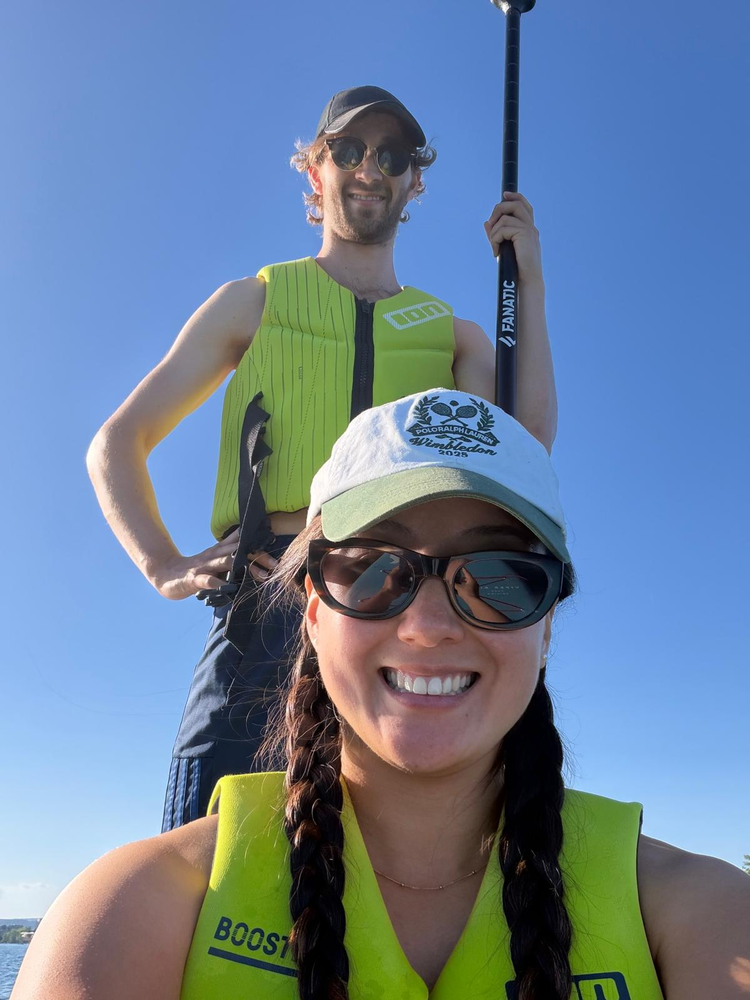
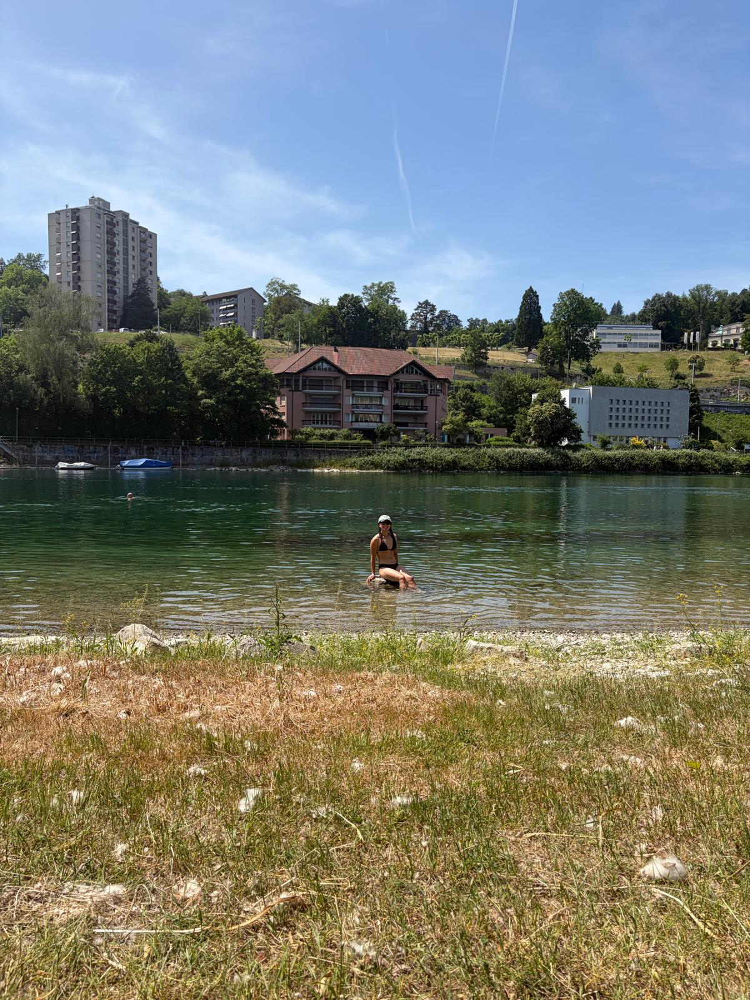
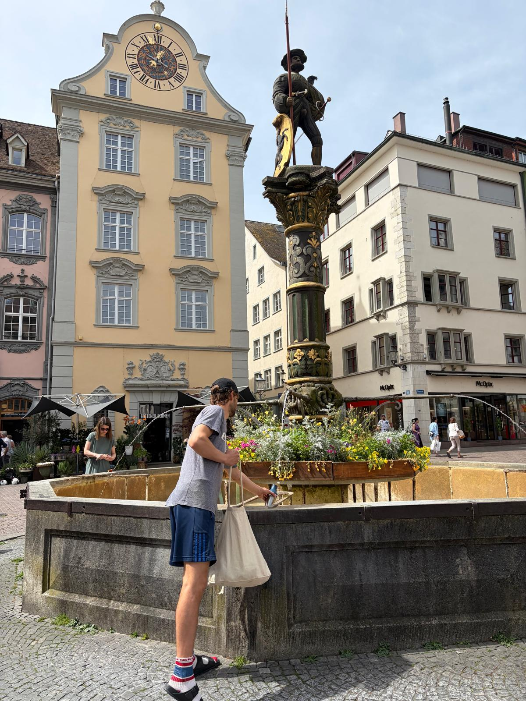

← Travel
Zurich 2026
The last stop on our Switzerland tour was Zurich, a contrast to the picturesque village of Wengen that we had just visited.

29th May 2026
We arrived by train and immediately set our sights on some of the famous Swiss chocolate. We also spied a special 100% cocao dark chocolate which we bought to try later (for some reason Dad didn't want to try it???? As we later found out, it was way too bitter for anyone!). We then took our talents to the stand up paddle board game. Sophie and I hopped on a double board and Dad on another. We all struggled to find our footing in the early stages, falling off multiple times before finding our groove. This time of year was such a joy to be on the water in Switzerland because the warm air tempewrature complimented the cold water perfectly.

30th May 2026
We decided to take a day trip out to Rhine waterfalls. This cute little city was famous for the thunderous waterfall that cascaded through the town. We were able to get up close and personal with the water flow and were astounded by the width. It was a very touristy spot and to escape we decided to go a little further upstream. We stayed alongside the river and found some very local spots along the river. We joined in the local festivities by hopping into the river and floating down with the current part of the way before walking back up. It was such a serene and calming setting and we saw a range of people (and dogs!) floating down the river.

31st May 2026
Our last day in Zurich and while Sophie was heading home, I was heading on to Chamonix. We decided to use our last day investigating the histroical side of Zurich. Entering the museum and some older parts of buildings. We had a slight bout of stomach troubles as we drank the water from the Swiss fountains (its encouraged!).Before long it was time to say goodbye to Switzerland :(